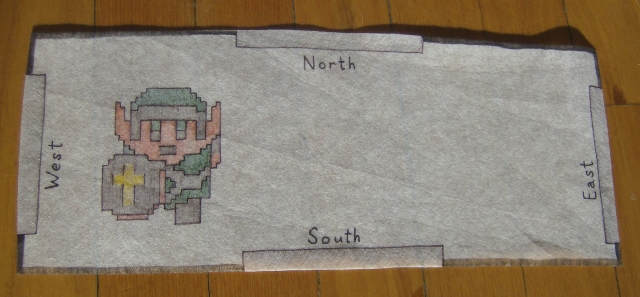
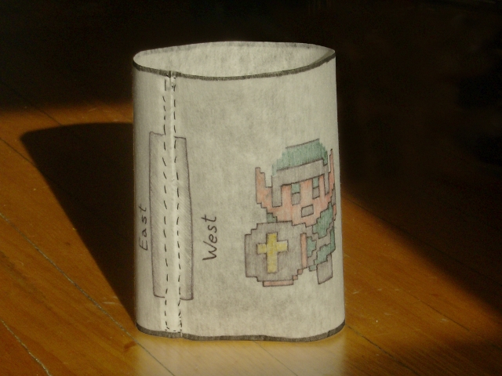
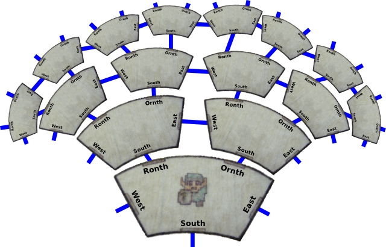
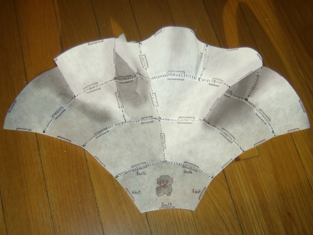
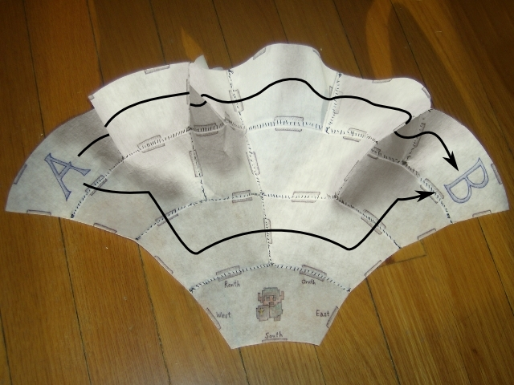
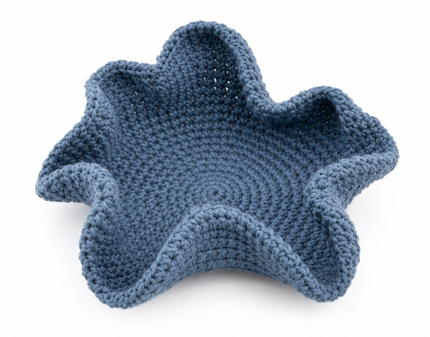
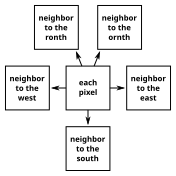

Using an atlas of binary (Böröczky) tiles, this map's tileData fetches data from three sources and merges them:
See the code in docs/dungeon-man.html.
In my opinion, binary tiles are the simplest way to think about hyperbolic space and intrinsic curvature in general.
Start by imagining a 2-dimensional room. It has four doors: north, west, east, and south.

In a Euclidean, 2-dimensional world, we could make a grid of rooms in which the east door of one room is the west door of another room. That would have many familiar properties, such as the fact that an east → east → north trip takes you to the same room as an east → north → east trip and a north → east → east trip.
Now imagine doing something strange: connect the east door of a room to the west door of the same room. A Dungeon Man living in 2-dimensional space doesn't realize that he's now on the surface of a cylinder (because he can't imagine 3 dimensions): he only knows that the east door is somehow a portal to the west of the room. It's magic, but not impossible to reason about.

Since we can make arbitrary portals, now consider replacing the north door with two doors: "ronth" and "ornth." They each lead to the south door of different rooms, which are connected through their east and west doors. We now have something like a grid of rooms, except that each row of the grid has twice as many rooms as the previous.

If we try to stitch this together with cloth, it buckles. The Dungeon Man doesn't feel the curliness of the cloth any more than he felt the cylinder: all he can see is the way the rooms connect to each other.

The way the rooms connect have surprising consequences: to get from room A to room B below, he could go east → east → east → east → east → east → east (7 steps) or south → south → east → ornth → ornth (5 steps). The weird connectivity not only changes what paths get to the same room, but which are the shortest paths to get there.

So far, we've been talking about magic portals connecting the doors with ordinary space in the room. Intrinsic curvature is this weird connectivity at a small scale: instead of sewing together rooms, imagine crocheting every stitch of a surface with more stitches in every row.

Or connect every pixel the way we've been connecting rooms—pixels that are so small they can't be seen. Mathematically, the connections are infinitesimal and need to be defined using calculus.

Although we are viewing models of 2-dimensional curvature in 3 dimensions, we don't need a higher-dimensional space to make sense of it. Intrinsic curvature is defined by how the space is connected, with large-scale observable effects like the shortest path between two points being something other than what you'd expect in Euclidean space, or the sum of angles in a triangle being more or less than 180°, or the area of a circle being more or less than 2π times the radius.
The Poincaré disk is one way to project it onto a flat computer screen, like a projection of the spherical Earth onto a map widget, but I prefer to zoom into the individual rooms to see curvature as a matter of connectivity.